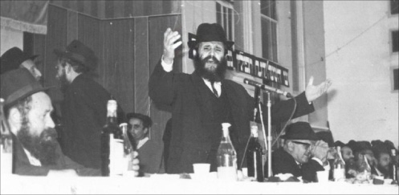

Growing Up in Chassidic Nevel Under the Communist Regime
This week marks ten years since the passing of the Chassid R’ Zalman Levin a”h of Kfar Chabad. He walked among us but he belonged to the generation of giants, Chassidim who lived lives of mesirus nefesh. In a series of meetings with him, he recounted the story of his childhood, growing up in a Chass
This week marks ten years since the passing of the Chassid R’ Zalman Levin a”h of Kfar Chabad. He walked among us but he belonged to the generation of giants, Chassidim who lived lives of mesirus nefesh. In a series of meetings with him, he recounted the story of his childhood, growing up in a Chassidishe home in the Soviet Union where children learned Torah and where kosher meat was secretly slaughtered. * Part 1 of 3

BRIEF BIO
Rabbi Shneur Zalman Levin a”h was born on 3 Shevat 5785/1925 in Nevel. His parents were R’ Gershon Ber and Freida Gittel, who were Chabad Chassidim. He grew up in the company of the great Chassidim of those days and he absorbed the spirit of Chabad Chassidus. He would often describe the Chassidishe atmosphere that was created by the likes of R’ Yitzchok Minkowitz, R’ Yona Poltaver, R’ Leibel Karasik and others, each of whom was a marvelous model of a Chassid.
R’ Zalman was known as the “lucky” one in his youth. As a child, he was often sick. He had pneumonia twice. Considering the conditions of those times, that he survived all his illnesses was a miracle. The little boy was looked upon with fondness by all who attended the local shul.
He learned in Tomchei T’mimim, which operated as a chain of secret yeshivos in Russia in those days. Due to the enormous danger, he had to wander from city to city with his friends in order to continue learning Torah.
With the outbreak of World War II, he was drafted into the Russian army and fought the Germans. He was an outstanding soldier. Over the course of the war, he found out that his parents and his entire family had been murdered by the Nazis, who had conquered Nevel. He swore to avenge their deaths. One day, he had his opportunity when he attacked and killed a number of Nazi officers.
Throughout his army service, he zealously preserved his Jewish identity, even under the impossible conditions of the Red army. Towards the end of the war, he removed his uniform and ran away. He hid in the home of the Chassid R’ Yisroel Dubroskin, who helped him escape the authorities.
He joined many of Anash as they escaped Russia under the law allowing Poles to return to their homeland. He arrived in Poking and made aliya together with other Lubavitchers including R’ Zushe Wilyamovsky.
He married Rochel Pariz in Adar 1947, daughter of the famous Chassid R’ Avrohom, and settled in Petach Tikva, a center for Lubavitchers at the time.
He spent most of his years teaching for the Reshet, as the Rebbe told him to do. He taught for many years in the Chabad school in Yaffo and was beloved by his students. He moved to Kfar Chabad in the 70’s.
For many years he was involved in the Rebbe’s mivtzaim, mainly at his t’fillin stand at the central train station in Tel Aviv. He enabled thousands of Jews to don t’fillin. Many of the soldiers and passersby went to him on a regular basis.
R’ Zalman was a wonderful baal menagen, and he produced a recording of songs of Nevel. For many years, he sang at the main gatherings in Kfar Chabad on Yud-Tes Kislev and Yud-Alef Nissan.
Towards the end of his life he suffered from poor health, though he did not allow those around him to see him in pain. He passed away at the age of 78, leaving children, grandchildren, and great-grandchildren who follow in his ways.
***
I was born in 5785 and grew up in Nevel. It was a small town where many Chassidim lived. Anything having to do with Yiddishkait entailed mesirus nefesh. Leningrad, for example, was a big city, and it was relatively easier there to manage since the surveillance was not as strict. However, in Nevel, since everyone knew everyone, if someone knew about some Jewish activity, the NKVD would immediately hear about it and that created many problems.
In 1938, a new commanding officer rose to power in the GPU, whose name was Yezhov. (He was the head of the GPU. Later, Stalin ordered him killed). He had a group of loyalists called the Yezhovshtzina. Their goal was to eradicate any vestige of Judaism and religion, including (l’havdil) priests. Anyone who held a position related to religion was arrested and exiled.
My father, R’ Gershon Ber, was a dear and outstanding Chassid. He was a melamed as well as a Shamash in the last shul in Nevel (out of many shuls that had been closed down), which was called the Piskovtziker Shul. We lived near the shul.
My father was a genuine Chassid. He hardly slept at night. He would get up early in the morning and learn Chassidus for several hours in a row, without a break. This was followed by davening with avoda for a long time. Then he would teach the children. He was completely removed from matters of this world.
He taught children Torah in hiding; obviously, this entailed great mesirus nefesh and tremendous fear every day, and at every moment. It was literally a matter of life and death. Throughout this time he received instructions from the Rebbe Rayatz who lived in Warsaw and Otvotzk to continue teaching.
Those were very hard years. My father taught me as well as my cousins. There were thirteen children in all, which he taught. Aside from him, there were another two melamdim who taught at the other end of Nevel. The Rebbe also asked them to continue teaching Torah. It was very hard to carry out this instruction when danger lurked in every corner, especially with informers around, even Jewish communists who informed on anyone who had anything to do with something Jewish. One had to be especially wary of them, since they were knowledgeable about inside Jewish matters.
We were five children, three boys and two girls. One brother was Binyaminke and the other was Tzvika (Tzvi Hirsh Ezriel). My sisters were Chayale and Sarale. All were killed by the accursed Germans and I was the sole survivor.
My brother Tzvika was adorable and very handsome (R’ Zalman cried). He inherited his looks from my father who was very handsome. My aunt Basya Feldman said that when my father walked down the street, people would stop and look at him.
• • •
The general situation was intolerable and dangerous. It was also difficult financially. There was simply no way to support oneself. People were hungry and lacked everything. We wore shmattes, patched old clothing, and torn shoes. When snow got into our shoes, we had no way to dry them. At night, we had nothing with which to protect ourselves from the cold that was a perpetual dweller in our home during the winter. What did we lie on? How did we cover ourselves? We would lie on straw and hay, like in the days of Rabbi Akiva, and that was our “mattress.” Over that, we would fill rags which served as our blankets. We got these rags from rich people who had discarded them.
I remember a long period in my childhood in which I starved. I would go to sleep starving and in the morning, before I began learning, my mother would prepare a slice of bread with some margarine for me, which was meant to suffice until evening. I don’t remember ever having eggs. A fried egg was considered food for the wealthy.
It was a period of poverty for all, even for non-Jews. It was illegal to sell any produce whatsoever on a private basis, and all profits went to the government with the merchants receiving a set salary. Everybody suffered, but in Nevel, the problems were greater than in the big cities.
Under the circumstances, there were many black market dealings. Jews did better in buying and selling farm products than non-Jews, thanks to their abilities and brains. They knew where to buy and what to buy and how much to buy and to whom to sell and at what prices.
No wonder that the situation in our house was terrible. My father’s teaching brought in only a little money, but by nature he was not materialistic and parnasa was not a top priority to him.
His Chassidishe friends told him to make more of an effort for himself and his family. He told them that he had the job of a melamed and could not leave it, since he had explicit instructions from the Rebbe about it. He also explained that being involved in a livelihood entailed bittul Torah. Although it is permissible to work a bit to support oneself, the main thing is to sit and learn Torah. There was nothing greater than teaching Torah to children.
My father had his critics who complained that he was abandoning his family.
My mother would buy large quantities of seeds (such as beans) from the gentile villagers and then would sell them (at the time, there were hardly any stores). She made a little bit of money in this way and other women did too. But this wasn’t enough, because my mother was weak and she could not always get the merchandise she wanted. It wasn’t something we could rely on.
There was another source of income. As I said, my father was a melamed as well as a Shamash. Among Anash in Nevel there were businessmen who did illegal business and made good money, as well as working men. Some of them told my father to continue teaching and they would help him out financially. Among them was R’ Chaim Barzin. His son-in-law was R’ Mulle Pruss who learned in secret until he married.
After he married, he became a big businessman and did very well. He helped finance Jewish life in Nevel. I remember that he would come to my father now and then with words of moral support as well as money so he could continue teaching. He didn’t want money matters to be a bother for my father.
R’ Getzel Rubashkin was also an important supporter of my father. He was a source of support and assistance for all the Lubavitchers in Nevel. He was a wonderful man with a good heart, special, and a sweetheart of a man. He and his father supported themselves from a small farm that they had in their yard. They raised cows, chickens and had some beehives. They made a nice living from this. Gentiles did business with them too. Getzel was exceptionally gifted at this work; as far as the law was concerned, as long as his farm did not extent outside the perimeter of his house for business purposes it was legal. If it extended beyond the house, that meant trouble. This was during the period when they weren’t so strict and did not yet forbid private farming.
R’ Getzel had the ability and desire to help other Jews who had it hard financially. I remember learning with one of R’ Getzel’s sons – Avrohom Aharon, who is a big baal tz’daka. When I would go to New York, I would visit him. Whenever he saw me, he would start crying and say, “Because of your father, I am a Yid,” i.e. thanks to your father I remained a Jew. He would tell me stories about my father that I myself didn’t remember since I was a very little boy at the time. He loved my father.
The Rubashkin house in Nevel was far from our house, about fifteen minutes away, and their children would come to us in a roundabout way so they wouldn’t be discovered. They came to our house to learn, daven, to hear a Chassidishe story, and this was all in order that they should be raised as Jews.
Since I’m mentioning Rubashkin, I want to tell you something else. R’ Getzel would try to arrange the sh’chita of a calf, something absolutely forbidden. He would get the calf from gentiles. Just buying it was dangerous, because he could be asked what the purpose of the purchase was – to slaughter it? Ah, slaughter in order to sell it? If so, that was a private enterprise which was illegal. One could easily get entangled with the law.
At that time, there were shochtim in Nevel. One was Yisroel Alter Horodoker, one was Mendel Chaim Dovid’s, the son of Chaim Dovid Laine, and another was Chaim Yosef Alperowitz.
Every now and then, they looked for opportunities to shecht, and each time it entailed big miracles. We had a dilapidated house that looked like a primitive shed. It was full of logs which were used for heating. It was a good hiding place that was unlikely to arouse suspicion. Sometimes, I would stand guard outside. As a child, I was terrified, though I was unaware of how dangerous it really was.
I remember that one time sh’chita took place on Friday morning, and Friday night my father trembled throughout Kiddush. That is when I realized what danger my father and his friends were in because of sh’chita, to the point that several hours after it was over and the danger was passed, he was so afraid that his entire body trembled and he could not finish Kiddush. My mother burst into tears.
That was the atmosphere in those days.
To be continued…
R’ ZALMAN: A LEBEDIKER
I had the privilege of sitting with R’ Zalman during the summer of 2000 on his porch in Kfar Chabad. His foot was bothering him and he had to rest a lot. I took notes and also recorded him during our conversations.
You couldn’t interview R’ Zalman. He was a Chassid of the previous generation, the kind who was unfamiliar with newspapers and interviews or any other formal format. When he sat and related his memories, he said it as though he was sitting at a warm Chassidishe farbrengen.
R’ Zalman was a lebediker (full of life) Chassid. His style of speech was hearty and warm. Sometimes he would say about a certain Chassid, “He was a sweet Chassid,” or “Ah, sweet, mamash sweet.” Then he would chuckle. He was able to describe things in great detail and his memory was clear, even if seventy years had gone by.
When he spoke, it was with his whole heart. Sometimes he laughed; sometimes (often) he cried. When he spoke about difficult times, of which there were many, or about tribulations that he or his family endured, he would burst into tears like a child. I would cry along with him.
It’s a pity that I didn’t complete the work of recording the events of his life. We got up to the point where he was a young adult and then he stopped. Although it was necessary to rework his stories, I tried to preserve his style. This is why it is not always neatly packaged, but the Chassidic authenticity is worth it.
THREE SONS, THREE CHASSIDIM
R’ Zalman’s grandfather was the noted Chassid, R’ Dovid Abba Levin. He was a melamed in Nevel and was known as “Dovid Abba’le der melamed.” The children of Chassidim would go to his house each morning and he taught them Torah and Chassidus.
He had four children, three of whom, three sons, became known as outstanding Chassidim and Yerei Shamayim: Yisroel Neveler, R’ Shraga Feitel and R’ Gershon Ber.
In those days, it was rare for one family to have three sons who were outstanding Chassidim. The Rebbe Rayatz once said about these three that they represented the fulfillment of the bracha of “Chassid,” “Yerei Shamayim,” and “Lamdan.” R’ Yisroel Neveler was known for his Middas Chassidus, R’ Feitel was the lamdan as he was an outstanding scholar, and R’ Gershon Ber was a Yerei Shamayim.
R’ Gershon Ber was a talmid of Tomchei T’mimim in Rostov. When the Germans captured Nevel, some neighbors tattled on him, saying he was a holy man. They buried all the Jews of Nevel alive, but they took him and hung him by the hands. He suffered tremendously, and three days later he was still hanging there, visible to all.
The Yosefin family of Nevel, who had escaped and joined the partisans in the forest, were witnesses to the atrocity and after the war, when they met his son R’ Zalman, they told him how and when his father was killed. R’ Zalman began observing his yahrtzait from then on. A short time later, his father came to him in a dream and said, “You are off by one day. My yahrtzait is a day later.”
EXTREME CARE WITH KASHRUS
R’ Zalman related:
My father was a big Yerei Shamayim and was particular about many things that other Chassidim were not particular about. For example, he was very careful with the kashrus of food. There were certain foods that the gentiles would sell, things that came from the ground, which did not need to be examined because there was no halachic problem with them. However, my father never did as everybody else did. He would make inquiries as to how the food was made; perhaps they mixed in forbidden fats or other things. And this was a time of starvation when the situation was very difficult.
Menachem Ziegelboim. "Growing Up in Chassidic Nevel Under the Communist Regime." Beis Moshiach, no. 857 (November 21, 2012).